Para computadores com Windows 10 e 11
Sabe sempre quanto tens, quanto deves e com quanto chegas ao fim do mês.
A Aurea é um programa para o teu computador que junta todo o teu dinheiro num só sítio: as contas do banco, a poupança, o dinheiro da carteira, os créditos e os investimentos. Mostra-te o que aí vem e como vai o mês, sem folhas de cálculo e sem nada na nuvem.
Pagamento único, sem subscrição · Só para Windows 10 e 11 · Em português, inglês e francês

É para ti se…
Não precisas de perceber de finanças nem de computadores. Se te revês numa destas situações, a Aurea foi feita para ti.
- Chegas ao fim do mês e não sabes bem para onde foi o dinheiro.
- Tens contas em vários bancos, um cartão refeição e algum dinheiro em casa, e nunca sabes o total.
- Pagas um crédito e não fazes ideia de quanto ainda falta nem de quando acaba.
- Já tentaste uma folha de cálculo ou um caderno e desististe ao fim de umas semanas.
- Queres começar a poupar, mas não sabes quanto podes pôr de lado.
- Não queres entregar os teus dados financeiros a mais uma app na nuvem.
Como funciona
Instala e cria o teu perfil
Descarregas, instalas no computador e escolhes uma password. Um tutorial interativo mostra-te tudo, com dados de exemplo, em poucos minutos.
Junta o teu dinheiro
Ligas o banco para os movimentos chegarem sozinhos (só de leitura), importas o extrato que descarregas do banco ou registas à mão. Podes misturar as três formas.
Abre e fica a saber
Quanto tens, quanto deves, o que vais pagar esta semana e com quanto acabas o mês. Tudo num só ecrã.
O que podes pôr na Aurea
Qualquer sítio onde tens dinheiro, e tudo o que deves ou vais pagar.
Contas do banco
A conta à ordem e a poupança, de um ou de vários bancos.
Dinheiro líquido e cartões
O dinheiro líquido, o cartão refeição, um mealheiro. Qualquer sítio onde guardes dinheiro.
Créditos
Habitação, carro ou pessoal: quanto falta pagar, a próxima prestação e quando acabas.
Investimentos
Ações, ETF e criptomoedas com o preço atualizado sozinho, e PPR ou certificados de aforro.
A casa e o carro
O que valem hoje, para saberes quanto vale tudo o que tens.
Pagamentos que se repetem
Salário, renda, luz, ginásio e subscrições, que a Aurea prevê antes de acontecerem.
Feita para te facilitar a vida
Menos tempo em folhas de cálculo e mais certezas sobre o teu dinheiro.
Todas as tuas finanças num só sítio
Contas, créditos, investimentos, a casa e o carro, tudo junto. Finalmente vês de uma vez o que tens, o que deves e quanto vale o teu património.
Nada te escapa
Salário, renda, subscrições, prestações e até aniversários aparecem antes de acontecerem. Com a Aurea ficas a par de tudo o que se passa.
Os movimentos com o nome que quiseres
Dá a cada movimento o nome e a categoria que fazem sentido para ti. Fazes uma vez e a Aurea lembra-se para os próximos.
Sabe hoje como acaba o mês
A Aurea junta o que tens, o que ainda vais pagar e o que vais receber, e diz-te com quanto chegas ao fim do mês. Sem surpresas no dia 30.
Vê o teu dinheiro a crescer
Acompanha mês a mês o teu património e os teus investimentos. Investes em dólares, libras ou bitcoin? A Aurea converte tudo para euros.
Uma nota à tua saúde financeira
Uma pontuação simples mostra-te o que está a correr bem e onde podes melhorar. Serve para te orientares e não é aconselhamento financeiro.
Vê como é
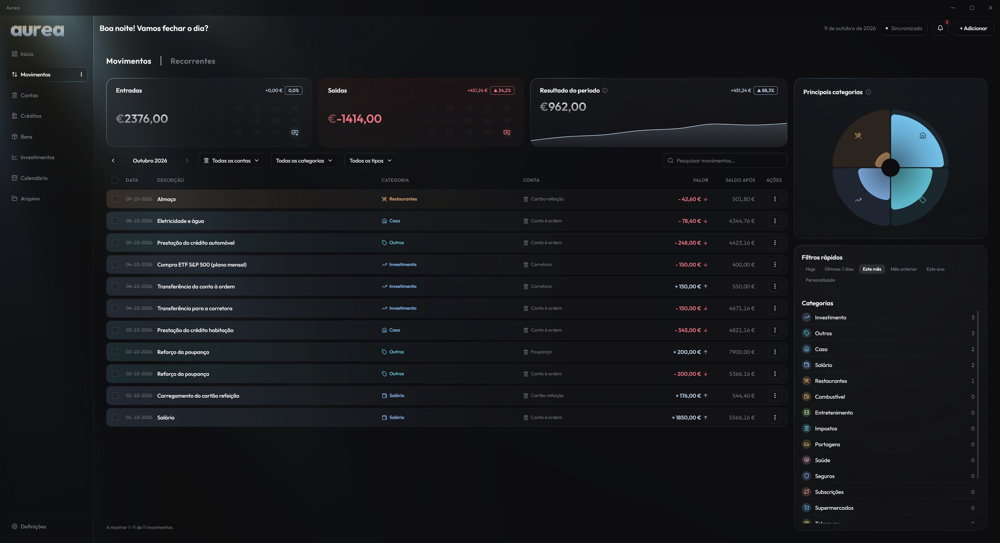
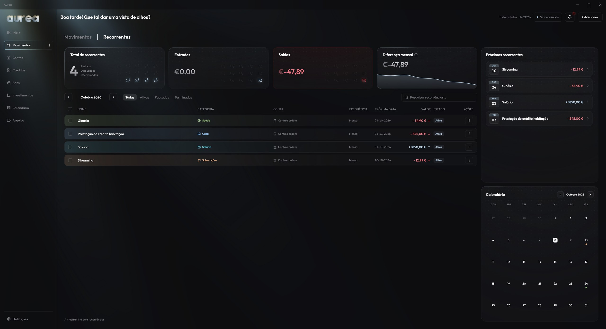
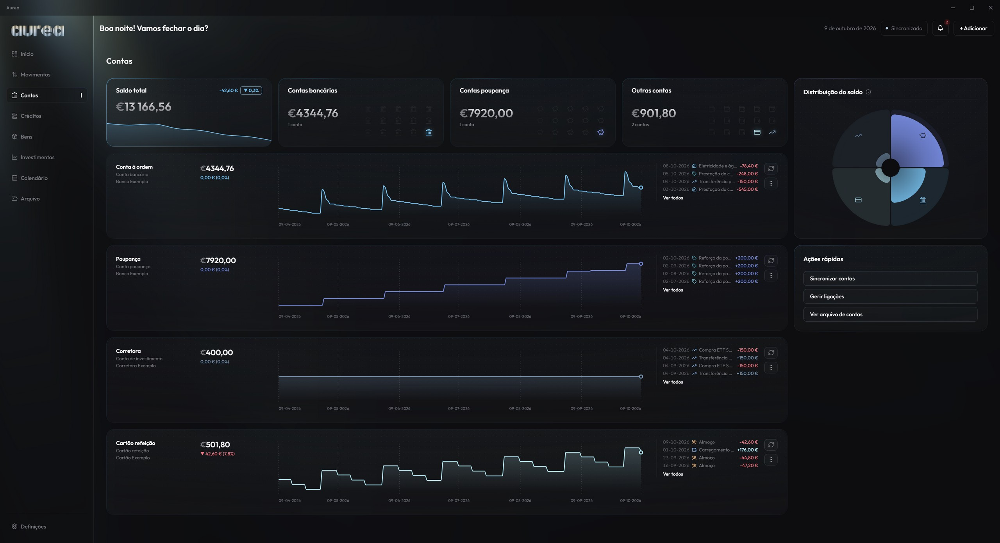
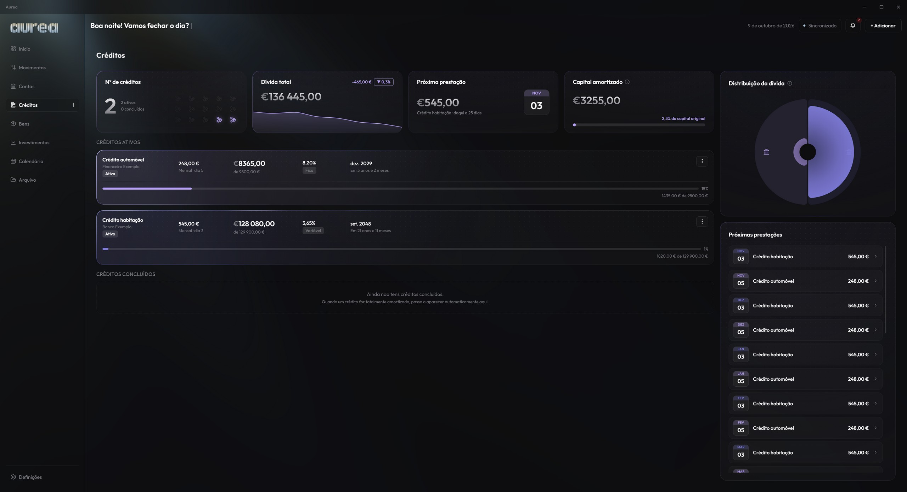
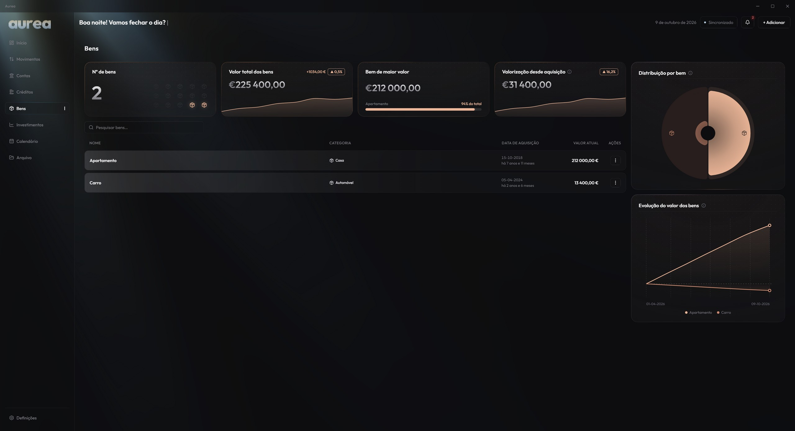
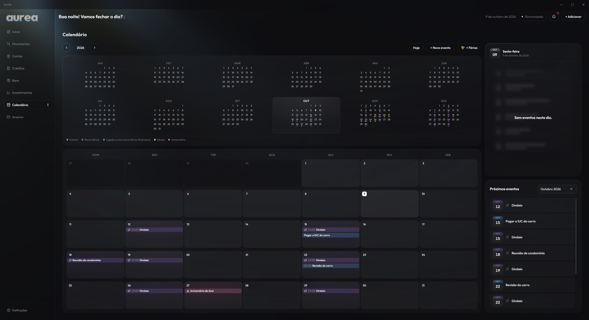
E ainda
- A tua agenda pessoal: o calendário junta pagamentos, aniversários, feriados e os teus eventos, e sincroniza com o Google Calendar.
- Créditos sem surpresas: sabes quanto falta pagar e quando acabas.
- A casa e o carro também contam: acompanha quanto valem.
- O banco ligado, só para ler: os movimentos chegam sozinhos, ou importas o extrato.
- Euribor e inflação à mão: sem teres de as ir procurar.
- Um perfil para cada pessoa da casa: cada um com a sua password.
- Bloqueia-se sozinha: quando te afastas do computador.
- Cópias de segurança: sempre que quiseres.
- Arruma o que já não usas: sem perder o histórico.
- Aprendes em minutos: com o tutorial interativo e o centro de ajuda.
- Atualiza-se sozinha: e as atualizações estão incluídas.
E muito mais.
Os teus dados não saem do teu computador
Uma app de finanças sabe tudo sobre ti. Por isso a Aurea foi feita para não guardar nada fora do teu computador.
Encriptados com a tua password
Sem a password, ninguém abre os teus dados. Nem a Aurea.
Sem nuvem e sem contas
Não há servidores com os teus dados nem registo online. Está tudo no teu computador.
Também podes usá-la offline
Se preferires, a Aurea funciona sem internet. Algumas funcionalidades, como a ligação ao banco e as cotações, precisam de ligação.
Banco só de leitura
A Aurea vê os movimentos, mas nunca mexe no teu dinheiro.
Preço
Pagamento único. Sem subscrição.
- Para computadores com Windows 10 e 11
- Licença para 2 computadores ao mesmo tempo
- Atualizações automáticas incluídas
- Vários perfis, cada um com a sua password
- Em português, inglês e francês
O pagamento é feito através de uma plataforma de pagamentos segura, que emite a fatura. Depois da compra recebes por email o link para descarregar e a tua chave.
Perguntas frequentes
Para que serve a Aurea, ao certo?
Para saberes, sem esforço, como está o teu dinheiro: quanto tens em cada sítio, quanto gastas e em quê, quanto deves, o que vais pagar nos próximos dias e com quanto chegas ao fim do mês. Em vez de abrires várias apps de bancos ou manteres uma folha de cálculo, vês tudo num só sítio.
Que contas posso pôr lá?
Todas: contas à ordem e poupanças de qualquer banco, o dinheiro líquido, o cartão refeição, a corretora, créditos, investimentos e bens como a casa e o carro. As contas que não ligares ao banco atualizas à mão, com os movimentos que fores registando.
Preciso de perceber de finanças ou de computadores?
Não. Instalas como qualquer outro programa e o tutorial interativo mostra-te cada ecrã com dados de exemplo. Se tiveres dúvidas, a ajuda dentro da Aurea explica tudo em linguagem simples.
O Windows mostra um aviso ao instalar. É normal?
Sim. A Aurea ainda não tem assinatura digital, por isso o Windows mostra "O Windows protegeu o seu PC". Carrega em "Mais informações" e depois em "Executar mesmo assim". Só acontece ao instalar.
Preciso de internet?
Para tirares partido de tudo, sim. Se preferires, podes usar a Aurea sem internet: registas, consultas e planeias tudo, mas ficas sem algumas funcionalidades. Precisam de ligação: a ativação da licença (só uma vez), a ligação automática ao banco, as cotações dos investimentos e o câmbio, indicadores como a Euribor e a inflação, a sincronização com o Google Calendar, as atualizações da Aurea e o envio de relatórios de problemas. Sem ligação, ficas com os últimos valores conhecidos.
Que bancos funcionam?
A ligação automática usa a Enable Banking, que cobre a maioria dos bancos europeus. Também podes importar extratos em CSV, CAMT.053 ou MT940, ou registar tudo à mão.
Funciona fora de Portugal?
Sim, em toda a Europa. A Aurea trabalha em euros e a ligação automática cobre a maioria dos bancos europeus. Se tiveres investimentos noutras moedas, como dólares ou libras, a Aurea converte-os para euros ao câmbio do dia.
Posso usar a Aurea noutro computador?
Sim. Cada chave dá para dois computadores ao mesmo tempo. Para mudar de computador, libertas o antigo nas Definições e ativas o novo.
E se perder a password?
A Aurea não consegue recuperar os dados sem a password, por isso guarda-a bem e faz cópias de segurança (a Aurea tem essa opção).
Funciona em Mac ou Linux?
Não. Por agora, a Aurea é só para computadores com Windows 10 e 11.
Vai existir uma app para telemóvel?
Não. A Aurea foi pensada para que os teus dados financeiros nunca saiam do teu computador: não há contas na nuvem nem servidores com os teus números. Uma app de telemóvel teria de sincronizar os dados entre aparelhos através da nuvem, e isso iria contra a ideia da Aurea. Por isso, a Aurea é e vai continuar a ser uma app para computador.
Posso devolver?
Como é um conteúdo digital entregue de imediato, ao comprar abdicas do direito de desistência de 14 dias. Se a Aurea não funcionar como descrito, escreve-nos e resolvemos. Vê os Termos de utilização.
É aconselhamento financeiro?
Não. A Aurea organiza e mostra os teus números. A pontuação de saúde financeira e as previsões são apenas indicações calculadas a partir do que registas, não recomendações. A Aurea não aconselha investimentos nem produtos financeiros e as decisões são sempre tuas. Para decisões importantes, fala com um profissional qualificado.
For Windows 10 and 11 computers
Always know what you have, what you owe and how you’ll end the month.
Aurea is a program for your computer that brings all your money together in one place: your bank accounts, savings, the cash in your wallet, loans and investments. It shows you what’s coming and how the month is going, with no spreadsheets and nothing in the cloud.
One-time payment, no subscription · Windows 10 and 11 only · In English, Portuguese and French

It’s for you if…
You don’t need to know about finance or computers. If you recognise yourself in one of these, Aurea was made for you.
- You get to the end of the month and aren’t quite sure where the money went.
- You have accounts at several banks, a meal card and some cash at home, and never know the total.
- You’re paying off a loan and have no idea how much is left or when it ends.
- You’ve tried a spreadsheet or a notebook and gave up after a few weeks.
- You want to start saving but don’t know how much you can set aside.
- You don’t want to hand your financial data to yet another cloud app.
How it works
Install it and create your profile
Download it, install it on your computer and choose a password. An interactive tour shows you everything, with sample data, in a few minutes.
Bring your money together
Link your bank so transactions come in on their own (read-only), import the statement you download from your bank, or record them by hand. You can mix all three.
Open it and know
What you have, what you owe, what you’ll pay this week and how you’ll end the month. All on one screen.
What you can put in Aurea
Anywhere you keep money, and everything you owe or are going to pay.
Bank accounts
Your current account and savings, at one bank or several.
Cash and cards
The cash in your wallet or at home, your meal card, a piggy bank. Anywhere you keep money.
Loans
Mortgage, car or personal: how much is left, the next instalment and when you’ll be done.
Investments
Shares, ETFs and crypto with prices updated automatically, plus pension plans or savings certificates.
Your home and car
What they’re worth today, so you know what everything you own is worth.
Regular payments
Salary, rent, electricity, the gym and subscriptions, which Aurea sees coming before they happen.
Made to make your life easier
Less time in spreadsheets, more certainty about your money.
All your finances in one place
Accounts, loans, investments, your home and your car, all together. At last you see at a glance what you own, what you owe and what your net worth is.
Nothing slips through
Salary, rent, subscriptions, loan instalments and even birthdays show up before they happen. With Aurea you always know what’s going on.
Transactions named your way
Give each transaction the name and category that make sense to you. Do it once and Aurea remembers it for the next ones.
Know today how the month will end
Aurea combines what you have, what you still have to pay and what’s coming in, and tells you what you’ll have left at the end of the month. No more surprises on the 30th.
Watch your money grow
Follow your net worth and your investments month after month. Investing in dollars, pounds or bitcoin? Aurea converts it all to euros.
A score for your financial health
One simple score shows you what’s going well and where you could improve. It’s there to guide you, not as financial advice.
Take a look
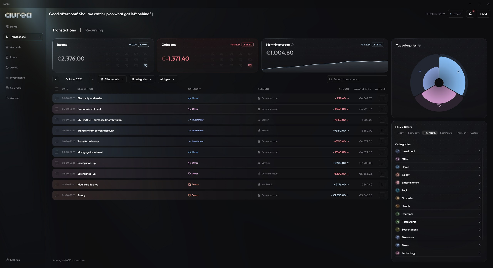
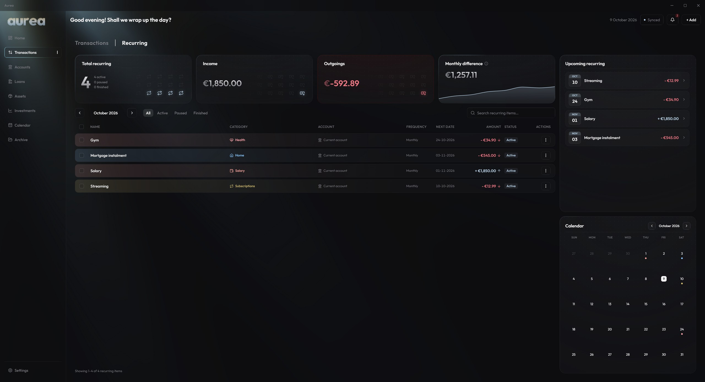
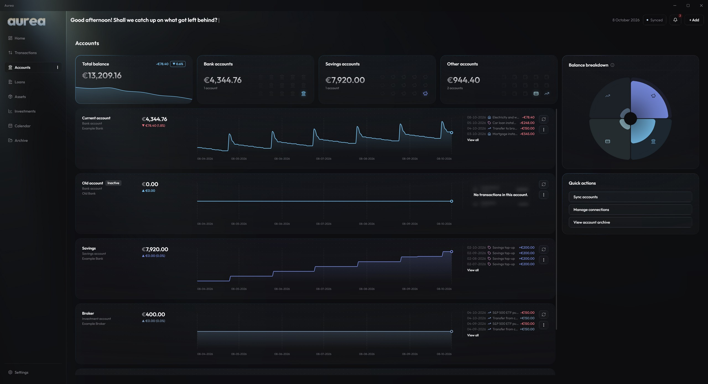
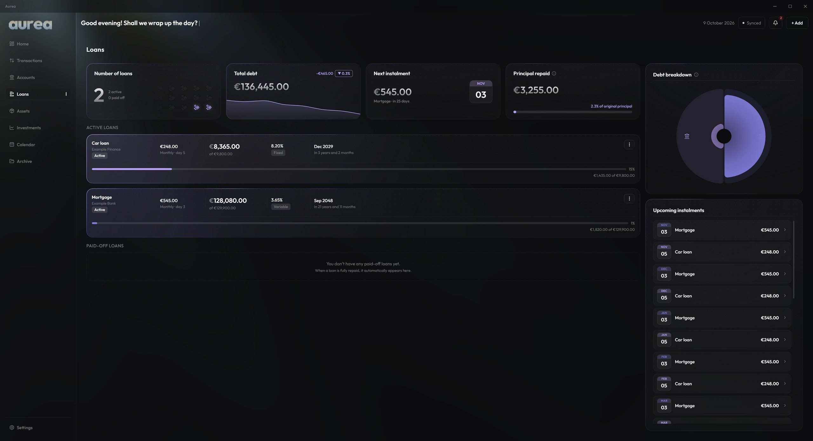
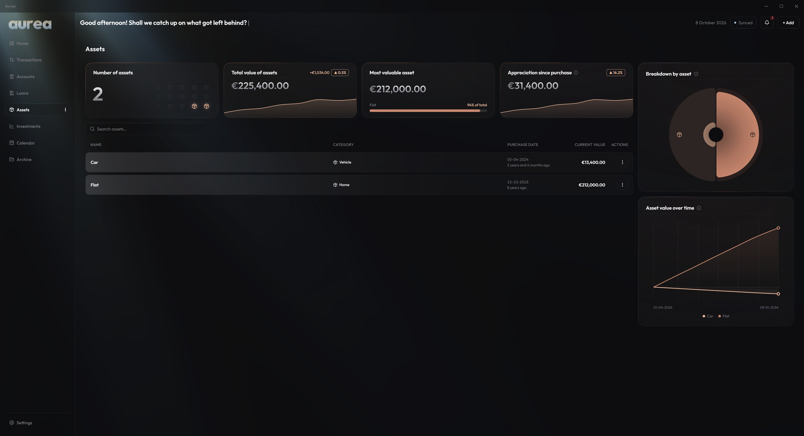
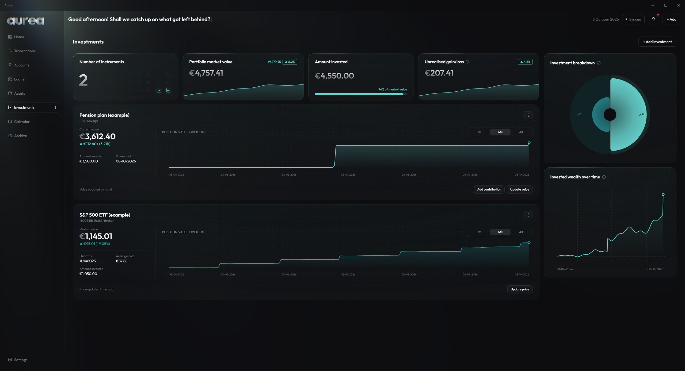
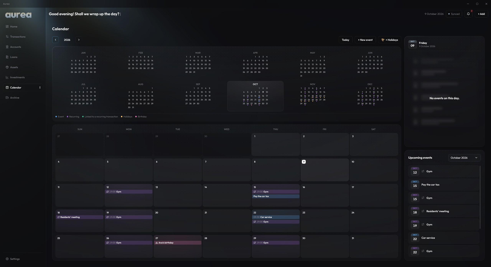
Plus
- Your personal planner: the calendar brings together payments, birthdays, holidays and your own events, and syncs with Google Calendar.
- Loans without surprises: know how much is left and when you’ll be done.
- Your home and car count too: keep track of what they’re worth.
- Your bank connected, read only: transactions arrive on their own, or import a statement.
- Euribor and inflation at hand: no need to go looking for them.
- A profile for everyone at home: each with their own password.
- Locks itself: when you step away from your computer.
- Backups: whenever you like.
- Tidy away what you no longer use: without losing its history.
- Learn it in minutes: with the interactive tour and the help centre.
- Updates itself: and updates are included.
And much more.
Your data never leaves your computer
A finance app knows everything about you. That’s why Aurea was built to keep nothing outside your computer.
Encrypted with your password
Without your password, nobody can open your data. Not even Aurea.
No cloud, no account
No servers holding your data and no online sign-up. Everything stays on your computer.
You can also use it offline
If you prefer, Aurea works without the internet. Some features, such as the bank connection and market prices, need a connection.
Read-only bank access
Aurea sees your transactions but never touches your money.
Price
One-time payment. No subscription.
- For Windows 10 and 11 computers
- Licence for 2 computers at the same time
- Automatic updates included
- Several profiles, each with its own password
- In Portuguese, English and French
Payment goes through a secure payment platform, which issues the invoice. After buying, you get the download link and your key by email.
Frequently asked questions
What exactly is Aurea for?
For knowing, effortlessly, how your money is doing: how much you have in each place, how much you spend and on what, how much you owe, what you’ll pay in the coming days and how you’ll end the month. Instead of opening several banking apps or keeping a spreadsheet, you see it all in one place.
What accounts can I add?
All of them: current and savings accounts at any bank, the cash in your wallet or at home, your meal card, your broker, loans, investments and things like your home and car. Accounts you don’t link to a bank are kept up to date by hand, with the transactions you record.
Do I need to know about finance or computers?
No. You install it like any other program and the interactive tour shows you each screen with sample data. If you have questions, the help inside Aurea explains everything in plain language.
Windows shows a warning when installing. Is that normal?
Yes. Aurea isn’t digitally signed yet, so Windows shows “Windows protected your PC”. Click “More info” and then “Run anyway”. It only happens when installing.
Do I need the internet?
To get the most out of it, yes. If you prefer, you can use Aurea offline: you can record, check and plan everything, but some features won’t be available. These need a connection: activating your licence (once only), the automatic bank connection, investment prices and exchange rates, indicators such as Euribor and inflation, Google Calendar sync, Aurea updates and sending problem reports. Offline, you keep the last known values.
Which banks work?
The automatic connection uses Enable Banking, which covers most European banks. You can also import CSV, CAMT.053 or MT940 statements, or enter everything by hand.
Does it work outside Portugal?
Yes, across Europe. Aurea works in euros and the automatic bank connection covers most European banks. If you hold investments in other currencies, such as dollars or pounds, Aurea converts them to euros at the day’s exchange rate.
Can I use Aurea on another computer?
Yes. Each key covers two computers at the same time. To switch, release the old one in Settings and activate the new one.
What if I lose my password?
Aurea can’t recover your data without the password, so keep it safe and make backups (Aurea has an option for that).
Does it work on Mac or Linux?
No. For now, Aurea is only for Windows 10 and 11 computers.
Will there be a phone app?
No. Aurea is built so your financial data never leaves your computer: there are no cloud accounts and no servers holding your numbers. A phone app would have to sync your data between devices through the cloud, which goes against the whole idea of Aurea. So Aurea is, and will stay, a computer app.
Can I get a refund?
Because it’s digital content delivered immediately, you waive the 14-day right of withdrawal when you buy. If Aurea doesn’t work as described, write to us and we’ll sort it out. See the Terms of use.
Is it financial advice?
No. Aurea organises and shows your numbers. The financial health score and the forecasts are only indications calculated from what you record, not recommendations. Aurea doesn’t advise on investments or financial products, and the decisions are always yours. For important decisions, talk to a qualified professional.
Pour les ordinateurs sous Windows 10 et 11
Sachez toujours ce que vous avez, ce que vous devez et comment vous finirez le mois.
Aurea est un programme pour votre ordinateur qui rassemble tout votre argent au même endroit : vos comptes bancaires, votre épargne, l’argent de votre portefeuille, vos crédits et vos placements. Elle vous montre ce qui arrive et comment se passe le mois, sans tableur et sans rien dans le cloud.
Paiement unique, sans abonnement · Uniquement Windows 10 et 11 · En français, anglais et portugais

C’est pour vous si…
Pas besoin de vous y connaître en finances ni en informatique. Si vous vous reconnaissez dans l’une de ces situations, Aurea a été faite pour vous.
- Vous arrivez en fin de mois sans trop savoir où est passé l’argent.
- Vous avez des comptes dans plusieurs banques, une carte titre-restaurant et un peu d’argent liquide, et vous ne connaissez jamais le total.
- Vous remboursez un crédit sans savoir combien il reste ni quand il se termine.
- Vous avez essayé un tableur ou un carnet et abandonné au bout de quelques semaines.
- Vous voulez commencer à épargner, mais ne savez pas combien mettre de côté.
- Vous ne voulez pas confier vos données financières à une énième application dans le cloud.
Comment ça marche
Installez-la et créez votre profil
Téléchargez-la, installez-la sur votre ordinateur et choisissez un mot de passe. Un tutoriel interactif vous montre tout, avec des données d’exemple, en quelques minutes.
Rassemblez votre argent
Reliez votre banque pour que les opérations arrivent toutes seules (en lecture seule), importez le relevé téléchargé depuis votre banque ou saisissez-les à la main. Vous pouvez combiner les trois.
Ouvrez-la et sachez
Ce que vous avez, ce que vous devez, ce que vous paierez cette semaine et comment vous finirez le mois. Tout sur un seul écran.
Ce que vous pouvez mettre dans Aurea
Tout endroit où vous avez de l’argent, et tout ce que vous devez ou allez payer.
Comptes bancaires
Le compte courant et l’épargne, dans une ou plusieurs banques.
Espèces et cartes
L’argent du portefeuille ou de la maison, la carte titre-restaurant, une tirelire. Tout endroit où vous gardez de l’argent.
Crédits
Immobilier, auto ou personnel : ce qu’il reste à payer, la prochaine échéance et quand vous aurez fini.
Investissements
Actions, ETF et cryptomonnaies avec le prix mis à jour tout seul, ainsi que l’épargne retraite ou les certificats d’épargne.
La maison et la voiture
Ce qu’elles valent aujourd’hui, pour savoir ce que vaut tout ce que vous possédez.
Paiements réguliers
Salaire, loyer, électricité, salle de sport et abonnements, qu’Aurea prévoit avant qu’ils n’arrivent.
Pensée pour vous simplifier la vie
Moins de temps dans les tableurs, plus de certitudes sur votre argent.
Toutes vos finances au même endroit
Comptes, crédits, placements, logement et voiture, tout ensemble. Vous voyez enfin d’un coup d’œil ce que vous avez, ce que vous devez et ce que vaut votre patrimoine.
Rien ne vous échappe
Salaire, loyer, abonnements, échéances et même anniversaires apparaissent avant d’arriver. Avec Aurea, vous êtes au courant de tout.
Des opérations au nom que vous voulez
Donnez à chaque opération le nom et la catégorie qui ont du sens pour vous. Vous le faites une fois et Aurea s’en souvient pour les suivantes.
Sachez dès aujourd’hui comment finira le mois
Aurea réunit ce que vous avez, ce qu’il reste à payer et ce que vous allez recevoir, et vous dit avec combien vous finirez le mois. Fini les surprises le 30.
Regardez votre argent grandir
Suivez mois après mois votre patrimoine et vos placements. Vous investissez en dollars, en livres ou en bitcoin ? Aurea convertit tout en euros.
Une note pour votre santé financière
Un score simple vous montre ce qui va bien et ce que vous pouvez améliorer. Il sert de repère et ne constitue pas un conseil financier.
Aperçu
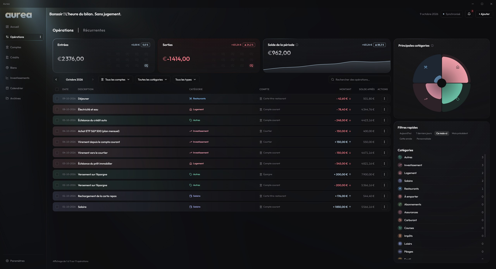
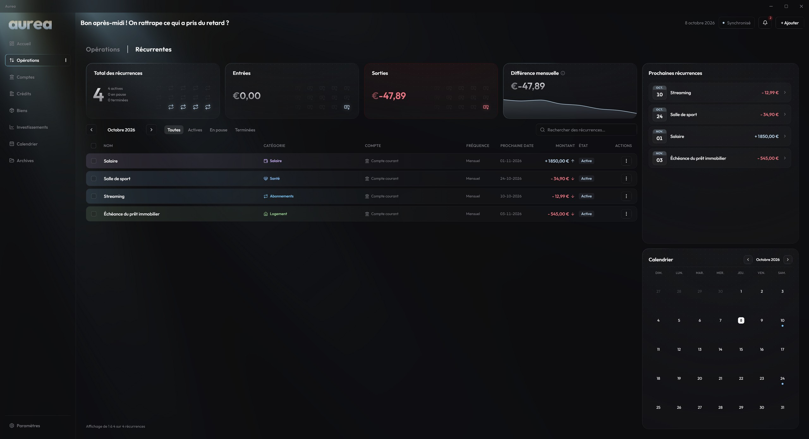
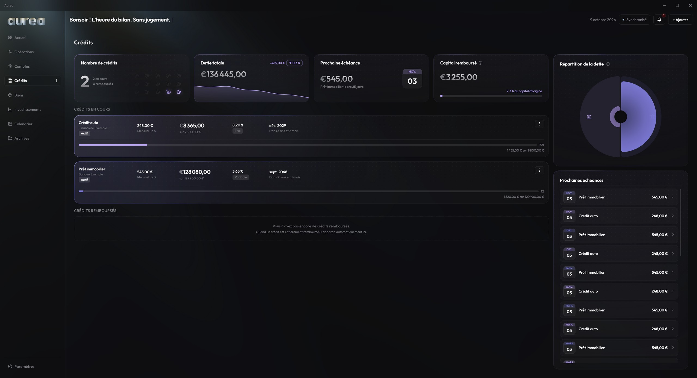
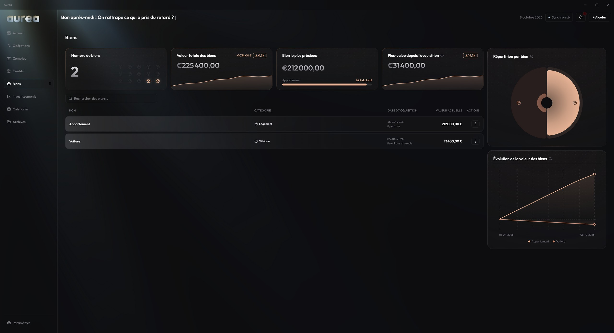
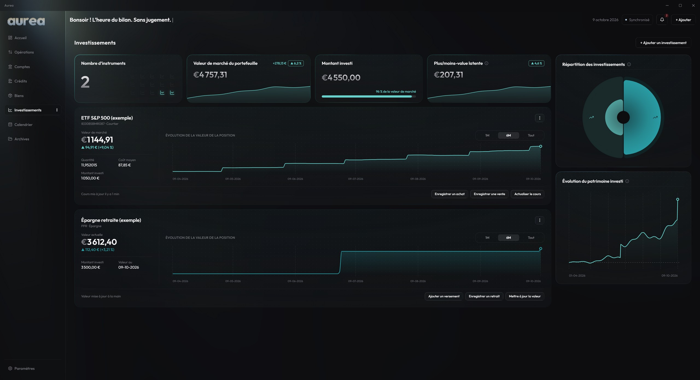
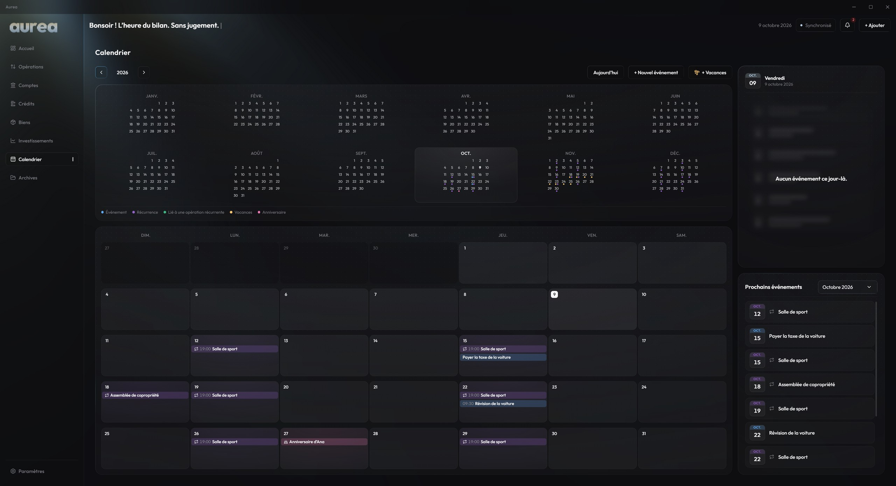
Et aussi
- Votre agenda personnel : le calendrier réunit paiements, anniversaires, jours fériés et vos propres événements, et se synchronise avec Google Agenda.
- Des crédits sans surprise : vous savez ce qu’il reste à payer et quand vous aurez fini.
- Le logement et la voiture comptent aussi : suivez leur valeur.
- Votre banque connectée, en lecture seule : les opérations arrivent toutes seules, ou importez un relevé.
- Euribor et inflation sous la main : sans avoir à les chercher.
- Un profil pour chaque personne du foyer : chacun avec son mot de passe.
- Se verrouille toute seule : quand vous vous éloignez de l’ordinateur.
- Des sauvegardes : quand vous le souhaitez.
- Rangez ce que vous n’utilisez plus : sans perdre l’historique.
- Prise en main en quelques minutes : avec le tutoriel interactif et le centre d’aide.
- Se met à jour toute seule : et les mises à jour sont incluses.
Et bien plus encore.
Vos données ne quittent jamais votre ordinateur
Une application de finances sait tout de vous. C’est pourquoi Aurea a été conçue pour ne rien garder en dehors de votre ordinateur.
Chiffrées avec votre mot de passe
Sans votre mot de passe, personne ne peut ouvrir vos données. Pas même Aurea.
Ni cloud ni compte
Aucun serveur ne garde vos données et aucune inscription en ligne. Tout reste sur votre ordinateur.
Utilisable aussi hors ligne
Si vous le préférez, Aurea fonctionne sans internet. Certaines fonctions, comme la connexion bancaire et les cours, ont besoin d’une connexion.
Banque en lecture seule
Aurea voit vos opérations mais ne touche jamais à votre argent.
Prix
Paiement unique. Sans abonnement.
- Pour les ordinateurs sous Windows 10 et 11
- Licence pour 2 ordinateurs en même temps
- Mises à jour automatiques incluses
- Plusieurs profils, chacun avec son mot de passe
- En portugais, anglais et français
Le paiement passe par une plateforme de paiement sécurisée, qui émet la facture. Après l’achat, vous recevez par e-mail le lien de téléchargement et votre clé.
Questions fréquentes
À quoi sert Aurea, exactement ?
À savoir, sans effort, où en est votre argent : combien vous avez à chaque endroit, combien vous dépensez et pour quoi, combien vous devez, ce que vous paierez dans les prochains jours et comment vous finirez le mois. Au lieu d’ouvrir plusieurs applications bancaires ou de tenir un tableur, vous voyez tout au même endroit.
Quels comptes puis-je ajouter ?
Tous : comptes courants et épargne de n’importe quelle banque, l’argent liquide du portefeuille ou de la maison, la carte titre-restaurant, le courtier, les crédits, les investissements et des biens comme la maison et la voiture. Les comptes que vous ne reliez pas à la banque se mettent à jour à la main, avec les opérations que vous saisissez.
Faut-il s’y connaître en finances ou en informatique ?
Non. Vous l’installez comme n’importe quel autre programme et le tutoriel interactif vous montre chaque écran avec des données d’exemple. En cas de question, l’aide intégrée à Aurea explique tout simplement.
Windows affiche un avertissement à l’installation. Est-ce normal ?
Oui. Aurea n’a pas encore de signature numérique, donc Windows affiche « Windows a protégé votre ordinateur ». Cliquez sur « Informations complémentaires » puis sur « Exécuter quand même ». Cela n’arrive qu’à l’installation.
Faut-il internet ?
Pour profiter de tout, oui. Si vous le préférez, vous pouvez utiliser Aurea hors ligne : vous saisissez, consultez et planifiez tout, mais certaines fonctions ne sont pas disponibles. Elles ont besoin d’une connexion : l’activation de la licence (une seule fois), la connexion bancaire automatique, les cours des placements et les taux de change, des indicateurs comme l’Euribor et l’inflation, la synchronisation avec Google Agenda, les mises à jour d’Aurea et l’envoi de signalements de problèmes. Hors ligne, vous gardez les dernières valeurs connues.
Quelles banques fonctionnent ?
La connexion automatique utilise Enable Banking, qui couvre la plupart des banques européennes. Vous pouvez aussi importer des relevés CSV, CAMT.053 ou MT940, ou tout saisir à la main.
Fonctionne-t-elle en dehors du Portugal ?
Oui, partout en Europe. Aurea fonctionne en euros et la connexion bancaire automatique couvre la plupart des banques européennes. Si vous avez des placements dans d’autres devises, comme le dollar ou la livre, Aurea les convertit en euros au taux de change du jour.
Puis-je utiliser Aurea sur un autre ordinateur ?
Oui. Chaque clé couvre deux ordinateurs en même temps. Pour changer, libérez l’ancien dans les Paramètres et activez le nouveau.
Et si je perds mon mot de passe ?
Aurea ne peut pas récupérer vos données sans le mot de passe : conservez-le bien et faites des sauvegardes (Aurea propose cette option).
Fonctionne-t-elle sur Mac ou Linux ?
Non. Pour l’instant, Aurea est uniquement pour les ordinateurs sous Windows 10 et 11.
Y aura-t-il une application pour téléphone ?
Non. Aurea est conçue pour que vos données financières ne quittent jamais votre ordinateur : pas de compte dans le cloud, pas de serveur qui garde vos chiffres. Une application mobile devrait synchroniser vos données entre appareils via le cloud, ce qui va à l’encontre de l’idée même d’Aurea. Aurea est donc, et restera, une application pour ordinateur.
Puis-je être remboursé ?
S’agissant d’un contenu numérique fourni immédiatement, vous renoncez au droit de rétractation de 14 jours lors de l’achat. Si Aurea ne fonctionne pas comme décrit, écrivez-nous et nous trouverons une solution. Voir les Conditions d’utilisation.
Est-ce un conseil financier ?
Non. Aurea organise et affiche vos chiffres. Le score de santé financière et les prévisions sont de simples indications calculées à partir de ce que vous saisissez, pas des recommandations. Aurea ne conseille ni placements ni produits financiers, et les décisions vous appartiennent toujours. Pour les décisions importantes, adressez-vous à un professionnel qualifié.